April 18, 2007 (4:11pm)
The only free viewer I could find
by Bruce Director
It is one thing to re-utter Heraclites’ fragment, “On those who enter the same river, ever different waters flow”, as the aphorism,“Nothing is constant but change,” as it has now become known, but it is entirely different, and significantly more important, to know the meaning of what Heraclites spoke. Even those who regard themselves as cognoscenti fail to understand this, as more often than not, they mistakenly consider change to be ephemeral. Competence in science, and more generally, sanity, depends upon being free from this error, and the mental obsessions that arise from it. However, such liberation comes not through formal abstract contemplations, which are intrinsically vulnerable to Eleatic-type sophistries, but, as Heraclites’ original formulation implies, through a pedagogical confrontation with the real, physically changing universe itself–a confrontation that all humans are, fortunately, blessed to experience.
These days, such encounters are increasingly widespread. The unfolding collapse of the physical economy is clashing with the prevailing anti-science social relationships that have dominated the Baby Boomer generation. For those who obsessively cling to these axioms, that collapse appears as a shockingly unpredictable change in the way the universe works. While this shock has prompted some to consider changing their axioms, others still insist on denying the experimental evidence that the collapse is both inevitable and underway. However, neither reaction is appropriate to the circumstances. Those more rooted in reality will recognize that the universe has not changed, but is, as always, changing. What has appeared as an anomaly, is actually the lawful and essential purge of both the flawed axioms of the Baby Boomer culture, and the equally flawed belief that any axiomatic system could prevail over the ever-changing, self-perfecting universe, whose universal characteristic can be recognized as anti-entropic.
The only competent understanding of the term anti-entropic has been supplied by Lyndon H. LaRouche, Jr. in his discoveries in the science of physical economy. Yet the term has been misused by those who don’t understand science. The source of confusion centered around it points directly to the underlying significance of Heraclites’ principle. The term anti-entropy does not signify a counter tendency to an otherwise entropic universe. Entropy is merely a formal construct void of any real existence. The real universe is essentially anti-entropic, which, as Heraclites, Plato, and Cusa all emphasized, means that the universe is everywhere changing, and nowhere contains a position, or condition, of no-change. The prefix anti, signifies what the universe is, not what it’s not, just as Kaestner’s, Gauss’s and Riemann’s use of the term anti-Euclidean (as distinct from the axiomatic non-Euclidean geometry of Bolyai and Lobachevsky), signified that in rejecting Euclidean geometry, the human mind’s role in the universe is intrinsically creative, i.e. anti-axiomatic.
Therefore, as Kepler showed, there is no point of equal motion (equant) in the otherwise non-uniform, always changing motions of the heavenly bodies. Nor is there a state of thermodynamic equilibrium towards which the universe is tending. Nor is there a Fukuyamaian end of history around which the political pendulum swings left and right, nor a magically stable formula for the value of money towards which the real physical economy must bend.
These sophists’ ploys, and the myriad of similar ones percolating throughout popular cultural and scientific opinion, all stem from the same pathology. They acknowledge the existence of change, while insisting on the necessary co-existence of a state of no-change. Such sophistries are rooted in the ancient Babylonian-type cult beliefs, such as Aristotle’s argument concerning the Perfection of God, which considers evil to be co-equal with Good. But these two states are mutually exclusive and cannot exist in the same universe. Once the existence of change is shown to be an elementary characteristic of the universe, as demonstrated most fundamentally by the physical efficiency of the creative powers of the human mind, it is proven that a state of Aristotelean stasis can exist only in the dead souls of sold-out sophists, not in the real world. On the other hand, once one is induced to accept the existence of a condition of no-change, then change is falsely perceived to be merely a secondary characteristic, a type of irrational deviation from a foolishly preferred, but illusory, state of no-change. As Plato, Philo, Augustine, Cusa and Leibniz insisted, and Kepler experimentally demonstrated, the Perfection of God and his creation is not a fixed state, but is the ever-changing condition of self-perfectability, expressed most perfectly by the creative powers of the human mind, and the efficient power of that creative capacity to produce change in the universe as a whole.
It is important to emphasize, however, that the frequent misunderstanding of the term anti-entropy does not lie in the term itself. It lies in the habituated ignorance of the fact that no truthful concept can be expressed in any way other than by classical irony and metaphor. All terms connected with truthful concepts reference an implied irony associated with an ontological paradox from which that concept arose. To reduce any concept to a term denoted by a fixed definition, is to impose a form of thinking on the inherently creative human mind, that intrinsically contradicts the ever-changing condition of the real world, as in the case of the pathetic Thomas Gradgrind.
In thought, as in the physical world, there are no truthful fixed definitions. Truthful statements concerning man and nature are both thought and expressed only as self-perfecting ideas of the type that the term anti-entropy denotes. To know an idea means to eternally experience its recreation. The associated term signifies an ever-deepening animation of the principle, such as the ever-changing significance of the Pythagorean comma as expressed in a living performance of J.S. Bach’s bel canto well-tempered polyphonic compositions and their elaboration, most notably, by Mozart and Beethoven--especially the latter’s late string quartets.
This is the spirit in which an investigation into the significance of the notion of anti-entropy must be taken–a spirit expressed by Bernhard Riemann’s treatment of C.F. Gauss’s hypergeometric function.
The Infinitesimal Makes All the Difference
The sign of genius is a little mark of manifold power. Kepler’s astronomical 8', Gauss’s astro-geophysical 16", Plank’s microphysical quantized harmonic oscillators, Lincoln’s transitory but immortal Gettysburg address, or Mozart’s enduringly brief Ave Verum, exemplify the expression of eternal universal principles in a small expanse of space-time. In this way, knowledge of the universe as a whole is captured in its changing expression in the small, and the attention of all knowledge is focused where it should be, on the characteristics of the universe as a whole.
This idea was already known to ancient civilizations, as indicated by Heraclites’s aphorism, but it was Leibniz’s development of the calculus that gave a more perfected means of expression to it. For Leibniz, the infinitesimal calculus, and his related science of dynamics, sought to discover the characteristics of the universe as a whole, from within the smallest reaches accessible to human investigation. This approach was first developed in its modern form by Nicholas of Cusa’s method of Docta Ignorantia, which found its first experimental application in Johannes Kepler’s discovery of the harmonic principles of universal gravitation. Taking his works as a single unfolding composition, Kepler showed that the smallest changes in physical action reflect the global characteristics of the entire universe. Recognizing that the expression of these global characteristics is everywhere changing, Kepler insisted that a new form of human expression must be created to be able to capture this relationship and to communicate it within and among generations. Knowing that the mortal portion of his life might prove too brief to complete his work, he stated the problem in {The New Astronomy} so that even his own death would not hinder his effort to produce a result.
Cusa’s and Kepler’s method stands in sharp contrast to the inferior, hostile reactions of Galilean empiricism and Cartesian mechanism. These latter sought to undermine the progress in human knowledge gained by Cusa and Kepler, by disconnecting the changes measured in small intervals, from the universe as a whole. These reactionary efforts were dealt a further blow with Pierre de Fermat’s elaboration of the principle of least-time. Fermat recognized that non-constant change was not limited to planetary motion, but was a fundamental characteristic of the physical universe. Kepler and Willibrod Snell had already discovered that the path of refracted light was dependent, not on the uniform relationship between the angle of incidence and the angle of refraction, but on the non-linear relationship between the sines of theses angles. Fermat threw the Cartesians into a snit fit by demonstrating that this non-linear characteristic of refracted light is an effect of a universal principle of least-time. He proved that the change in the direction of the path of light at the boundary between two media, is determined so as to minimize the time it took the light to travel the total path. This implies that a global characteristic, i.e. total time, is determining the position of the light as it travels along its way. The Cartesians argued that this could not be so because that would imply that a metaphysical intention, not a physical mechanism, determined the path of light. But the scientific evidence was irrefutable, and Fermat was defended vigorously by Leibniz, who insisted that a created universe, in which human creativity is an active principle, could have it no other way.
Responding to these provocations of Kepler and Fermat, Leibniz contributed the expression Kepler demanded: the idea of the infinitesimal as an expression of an ever-changing universal principle. Leibniz realized that to express physical action as an effect of a principle of change, the relationship between the universal expression of a principle, and its everywhere non-constantly changing manifestation, must be captured. This he succeeded in doing through his elaboration of the mutually inverse relationship of the differential and integral forms of the infinitesimal calculus, which, in more general physical terms, he called the science of dynamics.
Though the above reported summary is a matter of indisputable scientific and historical fact, the overwhelming majority of scientists today are completely ignorant of it, owing to a concerted campaign against Leibniz, which attempted to suppress Leibniz’s work in favor of the black magic hoaxster Isaac Newton. The purpose of this attack was not an arcane scientific debate, but a deliberate effort on the part of the Anglo-Dutch remnant of the Roman and Venetian oligarchy, to prevent the source of Leibniz’s discovery of the calculus, not only from forming the basis for a continuation of the Renaissance science of Cusa and Kepler, but from also becoming the basis for reorganizing human social relations according to the principle of the sovereign nation-states, whose purpose and existence is to defend and foster the sovereign creative powers of the individual human mind. The connection between the prominence of Leibniz’s concept of happiness as a founding principle of the United States of America, with Leibniz’s notion of the infinitesimal calculus, as defended by the Leibnizian collaborator of Benjamin Franklin, A.G. Kaestner, illustrates this point.
The widespread acceptance today of the attacks on Leibniz is demonstrated by the common, but fraudulent way in which the calculus is introduced to secondary school students and undergraduates in universities. In these classes, the students are usually first introduced, by formal definition, to Augustin Cauchy’s notion of a “derivative”. Then, after a generous amount of histrionics concerning little deltas and epsilons, the student is let in on another formal procedure identified as integrals, which is presented as the formal inversion of the derivative. If the student has been successfully brainwashed at this point, (either by failing to master the formalism and thus falsely believing himself to be an “artistic” rather than a scientific person, or, what is just as damaging, by foolishly believing that mastering the formalism certifies him as, “good at math and science”), he or she will be allowed to enter the higher reaches of the academic temple. At this point the student is introduced into the heady world of differential equations, which he is told from the very beginning, are equations that are for the most part “unsolvable”, but for which a great body of formal rules have been written. The student is then doomed to destroy whatever is left of his or her creativity in mastering these rules.
This method of teaching is not only destructive, it is, in scientific terminology, ass-backward. Calculus instruction should proceed, first and foremost, in the historical context in which it developed, as summarized above. Then the student should be provoked to rediscover it as Leibniz discovered it, first with a study of differential functions. Then Leibniz’s notion of the differential and the integral are easily understood. Such an approach is the only one that has ever produced any scientific discoveries since Leibniz’s day, and all other methods are intrinsically impotent.
Differential functions, as Leibniz designed them, state a physical problem in the mode of classical irony: “What are the characteristics of a universal principle which produce the perfectly infinitesimal changes in the investigated physical action?” The fact that such equations may not have a formal mathematical “solution” is of no significance, as ironical statements, not formal definitions, state principles . As Gauss and Riemann later showed, such solutions can be known by freeing science from the restrictions of formal mathematics, and entering the ironical domain of what Leibniz called: analysis situs.
The paradigmatic example of Leibniz’s method can be illustrated by the history of the catenary principle. The first major demonstration of the physical principle expressed by a hanging chain was Brunelleschi’s successful construction of the Dome over the church of Santa Maria del Fiore in Florence, nearly 200 years before Leibniz and Johann Bernoulli elaborated the physics of the catenary. Nevertheless, Brunelleschi not only grasped the principle, without a formal mathematical expression, but he was able to communicate that principle sufficiently to the workmen charged with carrying out its construction, that they could implement the project as if the idea were their own. To this day Brunelleschi’s Dome stands as a monument to the powers of the human mind, and the inadequacy of formal mathematics.
In their subsequent study of the physics of the matter, Leibniz and Bernoulli confronted the fact that the catenary could not be expressed by any of the formal mathematical expressions known at that time. Galileo had fudged the matter by trying to fit the catenary into the shape of a parabola. Rejecting such foolishness, Bernoulli expressed the shape of the chain as a function of the changing physical effect of gravity and tension that was acting on the chain. Though he could write down this relationship formally, by what Leibniz called a differential function, he could not give it a more precise expression. Yet Leibniz did, expressing the catenary principle with respect to his more general understanding of Napier’s principle of logarithmic functions. In so doing, Leibniz established the physically functional relationship among circular and logarithmic functions, laying the basis for its deeper expression by Gauss and Riemann in the complex domain.
From this point on, all progress in physical science can be characterized as further elaborations of the essential point of Leibniz’s method: it is change that is primary, and the fundamental unit of change is the universe as a whole.
As Leibniz states in his Discourse on Metaphysics:
I am quite willing to admit that we are subject to deception when we wish to determine God’s ends or counsels. But this is only when we try to limit them to some particular design, believing that he had only one thing in view, when instead he regards everything at the same time. For instance, it is a great mistake to believe that God made the world only of us, although it is quite true that he made it in its entirety for us and that there is nothing in the universe which does not affect us and does not also accommodate itself in accordance with his regard for us, following the principles set forth above.
This is what B. Riemann was referring to in his famous statement, “It is well known that scientific physics has existed only since the invention of the differential calculus.”
The Physics of Global Effects
Differential functions indicate deeper underlying characteristics of the universe than are evident from sense certainty. For example, formal geometry, backed up by sense certainty, tells us that the circle is a bounded curve with everywhere constant curvature. Yet, as the work of Cusa, Kepler, Fermat and Leibniz demonstrate there is no such action in the physical world. Instead, as the case of the catenary and refracted light attest, physical action depends on the non-uniform functions, such as, in this case, the sine function. But the sine function exists as part of a connected group of periodic functions, whose relationship to each other is expressed by their mutually connected principles of change, or, in Leibniz’s terms, their differentials. For example, the differential of the sine function is the cosine function, and the differential of the cosine function is minus the sine function. In this way, the circle can be defined, as it really exists, as that curvature formed by periodic functions whose differentials are related in this way. Similarly, Leibniz discovered the general principle underlying Napier’s logarithmic/exponential functions, as that unique self-similar function whose differential is equal to the function itself. It is from this standpoint that Leibniz was able to recognize the connection between the circular and logarithmic functions which underlies the principle of the catenary.
The superiority of Leibniz’s method, which he demonstrated by the solution to the catenary problem, was just the beginning. Leibniz, the Bernoullis, and Leibniz’s other collaborators, began immediately applying that method to other physical problems, which produced more complex differential functions. In the case of the catenary, for example, the position of the links of the chain, is a function of the changing relationship between the effect of gravity and tension on the chain. But if the chain is set into a vertical oscillatory motion, as when someone walks across a rope bridge, a second order change is introduced. In that case, there is the changing relationship between gravity and tension, and a change in that change.
Such second order effects are pervasive in dynamic action. Planetary orbits, pendula, wave motion, electro-magnetic effects, geomagnetism, thermodynamics, vibrating strings and membranes, are just a few examples whose physical characteristics result from such second order effects. What distinguishes the differential function that expresses one process from another is the relationship among the underlying first and second order principles of change.
For example, in the case of a circular pendulum, the bob travels along a circular arc. But its motion along that arc is accelerated due to the effect of the gravitational potential. As Leibniz showed, there is a connected relationship between the position of the bob, its speed, and the rate at which its speed is changing, which is governed by the dynamic, (metaphysical) principle that he called vis viva. These functions are united under a single principle, or as Leibniz characterized it: the full effect is equal to the full cause. Thus, the position of the bob is not determined by the angle the string makes with the vertical, but by the rate of change of that angle, which itself is always changing by a well-defined second order change. Though a differential function could be defined which expressed this second order relationship, none of the functions known in Leibniz’s time corresponded to it. Later, Gauss, and others, realized that this type of differential function implied a new species of transcendental function “defined” not directly, but as the “solution” to a physically determined differential function. Since this differential function corresponded to the same type of action associated with planetary orbits, it became known as an elliptical transcendental.
In this way, Leinbiz’s successors, most notably, Legendre, Pfaff, Gauss and his collaborators such as Dirichlet, Bessel, and others, discovered an entire zoology of functions that described physical processes. One significant example is the case of the so-called “Bessel” functions named for Gauss’s collaborator, Wilhelm Bessel who, along with Gauss, was investigating the “comma” associated with planetary perturbations. Kepler had already indicated that the characteristics of a planet’s elliptical orbit, such as eccentricity, were not fixed, but are changing with the development of the solar system. This reflects an effect in the harmonic ordering of the solar system analogous to the Pythagorean comma in music. However, in the case of the major planets, these changes are so slow and small that they were below the error of measurement at that time. But after the discovery of the asteroids, these small effects became subject to investigation. In this regard, Bessel investigated the functional relationship of the mean and eccentric anomalies with respect to a changing eccentricity. This gave rise to a differential function given his name.
These types of functions were entirely new, and could not be expressed in terms of previously accepted formal mathematics. This posed an existential crisis for the anti-creative empiricists. If the experimental evidence indicated that the physical universe was acting according to principles that were not represented by formal mathematics, how could the mathematicians calculate formulas that corresponded to the real world? Faced with the prospect of choosing between formal mathematics and the real world, they attempted to approximate these functions using curve-fitting statistical methods. This approach, typified by Euler, Laplace and Lagrange, ultimately failed, because no matter how numerically close the statistical methods were in large intervals, an everywhere-changing principle of change is never susceptible of being truly captured by numerical approximation and these statistical methods broke down in the small.
The statistical approach became totally discredited by Gauss’s famous determination of the orbit of Ceres. In that case, Gauss alone solved the problem of determining Ceres’ orbit, because he recognized that the small interval of Piazzi’s observations, must reflect the harmonic ordering of the solar system as a single dynamic process. Where all the others were trying to compute Ceres orbit from statistical methods, Gauss used the method of Kepler and Leibniz. As the October 1801 re-sighting of Ceres attests, Gauss was right, and the others were wrong.
However, Gauss was not satisfied with just knowing the animals in the zoo of differential functions. Rather than accepting a zoology of Aristotelean categories, each with their special quirks and habits, Gauss investigated the nature of the species of which all the animals were a part. He recognized that all the differential functions that arose from the investigations of the physical universe, were special cases of a more general differential function, whose solution is what he called, the hypergeometric function.
As with much of Gauss’s work, his published treatise on the hypergeometric function covers only a small part of his ideas. Some of the rest is contained in fragmentary entries in his notebooks, and much remained only in his mind. Fortunately, Riemann had access to both, and applying his own creative insights to the foundation laid down by Gauss, he elaborated the nature of the species that today is associated with the idea of Riemannian physical hypergeometries. As he stated in his 1857 treatise on the subject:
In the following work I have treated these transcendental functions by a new method, which essentially remains applicable to any of those functions that satisfy a linear differential equation with algebraic coefficients. What previously had been found only by troublesome calculations, this approach yields almost directly from the definition. What has been done in the part of the work presented here, chiefly in view of their numerous applications in physics and astronomy, is to give a suitable overview of the possible representations of the functions.
Riemann’s ideas are contained in this published treatise, as well as a series of notes of his 1858/1859 winter semester lectures. In his author’s introduction to the published work, Riemann specifies his approach:
In the work announced here a method has been applied to these transcendentals, whose principles have been discussed in my inaugural dissertation (section 20) and which yields all previous results almost without calculation.
In that doctoral dissertation, Riemann had shown that physical principles, which themselves are not accessible via sense perception, can be expressed by the global characteristics, specifically the boundary conditions and singularities, of a complex function and, that these characteristics determine completely the behavior of the function in the infinitesimally small.
Riemann built his method primarily on the work of Gauss and Dirichlet on potential functions which arose in the investigation of electromagnetic, geomagnetic and thermodynamic effects. These functions sought to express these physical effects by the essential characteristics of the underlying principle. Those characteristics are expressed as a set of two or more families of curves which are everywhere mutually orthogonal. These curves are the pathways of minimum and maximum changes in the potential and thus express a physical principle of least-action. Gauss and Dirichlet showed that this principle of least-action is primary, and that the boundary conditions such as, for example, the surface of a magnet or electrical body, determines the specific shape of the curves. In this way, the physical principle of least action determines the physical-geometrical “shape” of physical space time–a principle that Riemann famously termed, “Dirichlet’s Principle”. (See Figure 1). Riemann recognized that this physical principle of least action can be expressed uniquely by complex functions.
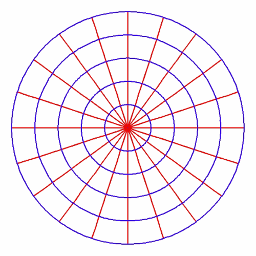
However, Riemann understood that a boundary, in the most general sense, is where the characteristics of change, fundamentally change. This does not necessarily mean a definite place, such as at the surface of a magnetic or electric body, but a definite, fundamental change in the principles acting, such as in the case of the boundary between abiotic, biotic and cognitive processes.
In the differential functions, this higher form of change is indicated when the differential function appears to become infinite. But as Cusa recognized, the appearance of the infinite in the finite is not an indication of something “out of this world”, but the footprint of a new principle that is acting on the boundary of the old, affecting it everywhere, in the infinitesimally small.
This relationship is brought out when the associated differential functions are expressed using Riemann’s geometrical method of expressing complex functions. In that case, the number of singularities determines the global characteristics, and vice versa. For example, Figure 2 illustrates a transformation of a potential function with two singularities (principles) to one with seven. Notice that as more singularities are added, the internal relationships fundamentally change, while the orthogonal characteristic of the principle of least-action is maintained. Significantly, each new singularity (principle) is added discontinuously.
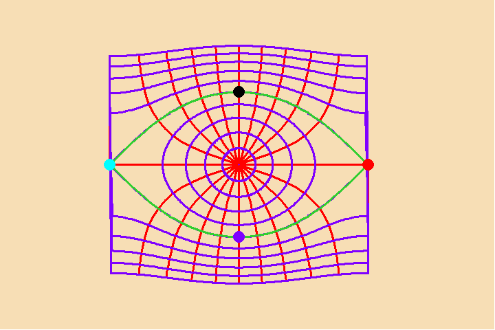
The emergence of the new singularities, like a creative discovery of a new physical or artistic principle, entirely changes the global characteristics of the manifold. This is exemplified by Kepler’s determination that there was no equant, which meant that the global characteristics of the universe were entirely different than those assumed by Ptolemy, Copernicus and Brahe. Though gravity existed prior to Kepler’s discovery, his discovery of it fundamentally changed, gravity’s role in the universe, as Kepler brought it into the province of the human mind.
Riemann further demonstrated that the emergence of singularities was a physical necessity, not a mathematical effect. Most notable in this regard is his famous demonstration of the existence of shockwaves, decades before their experimental demonstration. In his study , Riemann shows that a process expressed by an otherwise continuous differential function, will necessarily reach a boundary condition where a singularity (shock wave) will occur. The formation of this shock wave redefines the characteristics of the entire process.
From this standpoint, Riemann defined a higher function, which he called the “P-function” of which the hypergeometric function is a special case. Much to the chagrin of the formalists, Riemann never wrote down a formula for this function, but described it only by the number of singularities, and the behavior of the function at those points. In this way, Riemann showed that if these minimum number of conditions were specified, the entire characteristics of the potential function, in every infinitesimally small interval, are determined, without the need for calculation.
From this Riemannian standpoint, Heraclites’ aphorism takes on an entirely new light. Nothing is constant but change, but change itself must change.
The Harmonics of Global Effects
Riemann’s P-function, and his associated study of abelian functions, has implications far beyond an expression for a species of physical differential functions. It provides a foundation for developing a concept for a higher type of functional relationship, that expresses the anti-entropic nature of a universe, self-developing into higher states of organization and existence. Such a function is characterized by an ever-increasing density of harmonically ordered singularities. Like Riemann’s P-function, this concept cannot be expressed by any mathematical formula. Only the methods learned from classical irony and metaphor will suffice.
The earliest known developed form of this investigation is associated with the Pythagoreans, who found, in the relationship between musical and geometrical harmonies, a reflection of the characteristics of universal principles. Most notable in this regard is Archytas’s remarkable construction for the doubling of the cube, and his related work on musical harmonics. As Plato documents in his dialogues, these discovered harmonic relationships reflect the true characteristics of a developing universe, and the deliberate power of the human mind to discover and master them. At the behest of his oligarchical masters, Aristotle denigrated this harmonic connection, between human creativity and the universe as a whole, to a mere accident, laying the basis for modern empiricism and fascism. The popular acceptance of Aristotle’s view over Plato’s among the Greek-speaking states, led, as Aeschylus, Archytas and Plato warned, to a degeneration from the higher levels of scientific, artistic, technological and culture development previously achieved, and to the ultimate dominance of Europe by the oligarchical system, but for a few notable exceptions, for nearly 1500 years.
With the dominance of Aristotle finally shattered by Cusa, his follower, Kepler, picked up the study of harmonics where the Greeks stopped. In the first three books of his Harmony of the World , Kepler summarizes, in a more advanced form, the most significant discoveries of harmonics that had been achieved by Greek culture. There he shows the connection among the harmonic divisions of the circle, sphere and musical scale. Further, in the concluding fourth and fifth books, Kepler shows that the non-uniform periodic motion of the planets, when taken from the standpoint of the solar system as a whole, reflects these same harmonic relationships.
However, when these Keplerian harmonics are re-examined from the standpoint of Gauss and Riemann, an even higher form of harmonics emerges.
As Kepler shows in recapitulating the Greek understanding of the matter, the regular divisions of the circle are distinguished from one another by the degrees of “knowability” through which their magnitudes are constructed. Each new division requires a new species of magnitude. Kepler understood from Cusa that all these degrees of knowability are subsumed by a higher, transcendental, species of magnitude, later understood, as discussed above, to be expressed by the periodic and non-uniform circular functions.
But Gauss recognized that the regular divisions of the circle are produced by the unique harmonic characteristics intrinsic to these periodic non-uniform functions. Each regular division, Gauss showed, is, like a planetary orbit, a unique form of harmonic motion. Thus, from the standpoint of sense certainty, the regular plane figures may appear as equal divisions of the circle, but their true origin lies in the harmonics of non-uniform motion. Further, Gauss discovered, these harmonic “orbits” are themselves harmonically ordered, as reflected in the different degrees of knowability of their associated magnitudes. Once he had this higher harmonic relationship in view, Gauss was able to recognize that the so-called “constructable” magnitudes were limited to certain harmonic values. This allowed him to see at once the extension of the constructable magnitudes to the 17-gon and other similar higher divisions.
As Kepler notes, the harmonic divisions of the circle only partially reflect the harmonics of the physical world, because they are harmonic divisions of a curve, and the world is a globe. Thus, in the tradition of the Pythagoreans, he turned first to the higher harmonic relationships of the sphere. The constantly curved sphere, Kepler showed, expressed these harmonics (which he called by the Latin word congruence) in the regular and semi-regular solids. Gauss showed, with his work on curved surfaces and Napier’s pentagramma mirificum, that these harmonics reflect the periodicity of spherical curvature. As Gauss’s work indicates, and these harmonics reflect, the everywhere constantly curved spherical surface, is only the visible form of an underlying non-uniform periodic hypergeometric function.
But, as Kepler’s treatment of musical harmonics shows, the harmonics of curves and surfaces are still not sufficient. First, as is evident from the bel-canto polyphony, the musical harmonics cannot be derived from the harmonics of curves and surfaces and, second, the physical harmonics of the solar system reflect these two, related, but distinct harmonic relations as arising from a single principle.
Therefore, a higher species must be sought from which a form of hypergeometric harmonics can unfold. Riemann’s P-function provides an insight into the sought-for principle. As Riemann showed, the global characteristics of his P-function generate such a higher form of harmonics, as the consequence of hypergeometric periodicity.
Though the mind can see clearly these hypergeometric periodicities, they can not be directly visualized as in the case of a curve or sphere. Nevertheless, Riemann provided a geometrical metaphor to express the principle relationships. He applied the same method to his P-function.
As discussed above, Riemann showed that the essential characteristics of all physical functions are determined by the number of singularities, and the behavior of the function at these points. The simplest hypergeometric case specifies three such singularities. Thus, when the solution of the hypergeometric function is expressed by Riemann’s geometrical method of complex functions, it maps a hemisphere onto a triangle, with the singularities corresponding to the vertices. The behavior of the function at these points is expressed by the angles at each vertex. (See Figure 3.)
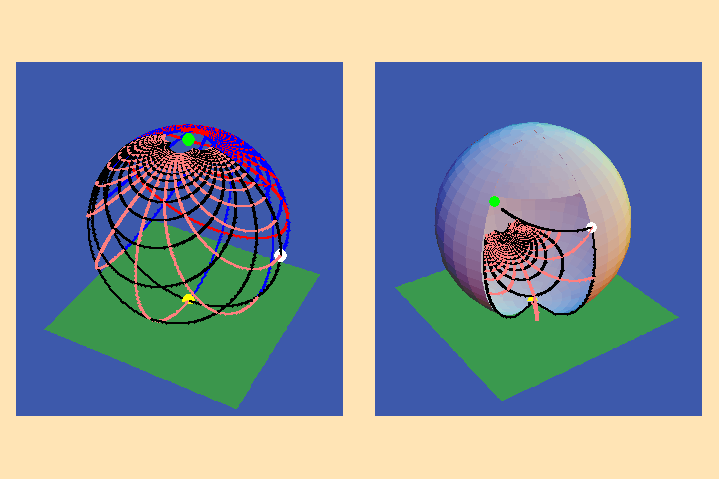
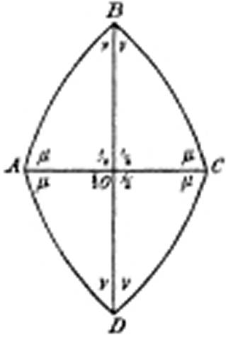
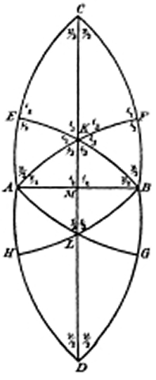
Riemann then constructed a periodic function from the hypergeometric function, by mapping one hemisphere to a triangle, the remaining hemisphere to a neighboring triangle, a second layer of the first hemisphere to another triangle, and so forth. The singularities are always mapped to the vertices, and the behavior of the function at those points is expressed by the angles that the boundary of the triangle makes at those points. Riemann noted that if the sum of the angles of such a triangle is greater than 180 degrees, then the triangle is a spherical one. If it is equal to 180 degrees, the triangle is planar. And if the sum is less than 180 degrees, the triangle is negatively curved.
In general, the triangles generated from this periodic hypergeometric function will not form, what Kepler called a congruence, or harmonic relationship, except in those cases where the angles formed by the sides of these triangles correspond to certain harmonic values. In the case of the spherical angles, that corresponds to the angles of the five regular solids. (See Figure 4.).
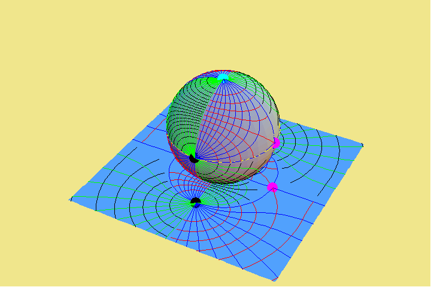
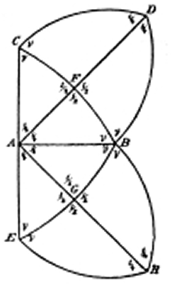
In the case of plane angles, that corresponds to the angles of the elliptic function. (See Figure 5.).
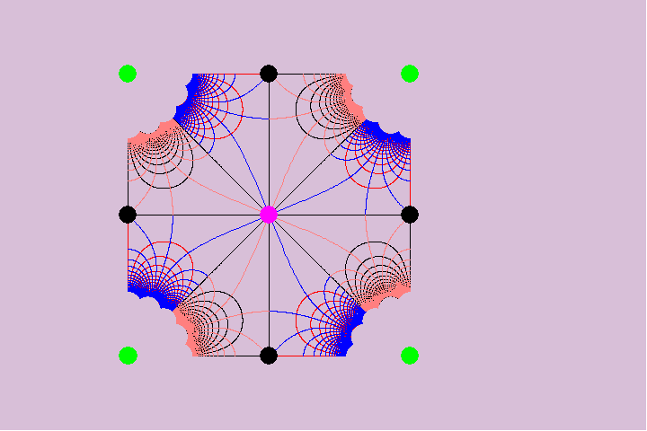
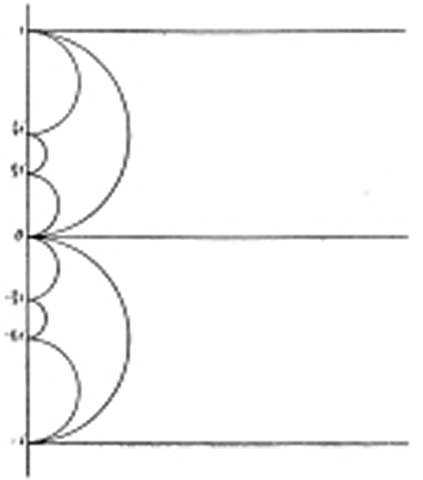
In the case of negatively curved surfaces, that corresponds to the angles of the hyper-elliptical and abelian functions. (See Figure 6.)
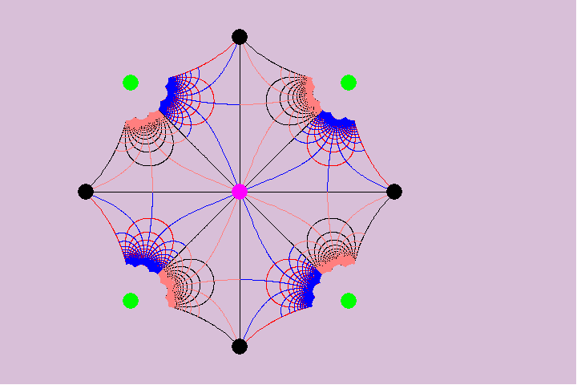
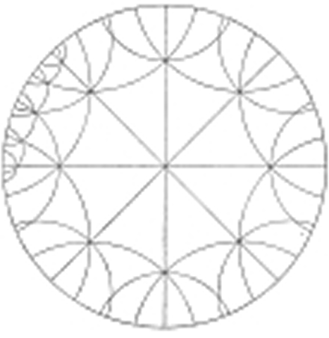
Thus, the five regular solids are unique, harmonic values of a hypergeometric function, among a larger set of hypergeometric harmonics.
In this way, Riemann showed that functions with an increasing number of singularities can be constructed as the inverse of such a hypergeometric periodic function. Further, a notion can be formed from this of a higher function that encompasses this succession of periodic functions. Such a notion provides a first glimpse of the global characteristics from which hypergeometric harmonies, unfold.
Yet, as Kepler’s experimental evidence indicates, the actual harmonics of the physical universe are much more complex. Kepler’s harmonic relationships among the planetary orbits are not perfect, but indicate a higher principle, a more complex global principle of change governing planetary motion, than is indicated when the harmonic relations are derived from a lower level. This higher principle was, in part, discovered by Gauss’s determination of the orbit of Ceres and his discovery that planetary motion was associated with the higher harmonic principle of the arithmetic-geometric mean. That was extended still further, with Gauss’s and Riemann’s demonstration that this was a special case of the hypergeometric function.
That higher harmonic relationship is indicated in what should not seem like another domain: J.S. Bach’s compositions of bel-canto well-tempered polyphony. Bach’s demonstration of the higher powers of human cognition through his compositions, further points to the nature of the higher harmonics at work in the organization of the universe as a whole. Beethoven’s extension of Bach’s method, most notably in his late string quartets, leads us even further into an understanding of these higher harmonics.
Such an approach must now be taken, as Riemann indicated in his habilitation dissertation, into the investigation of the microphysical and astrophysical domains. Already, the experimental evidence amassed since Riemann’s time has indicated the existence of very complex harmonic orderings in these domains. Yet the resurgence of the Aristotelean belief in a mythical state of no-change, as exemplified by the Copenhagen school’s interpretation of quantum mechanics insistence on an ultimately random, i.e., non-changing, universe, has led the majority of scientists on a fools errand of either developing statistical models, or searching for a new form of mathematical formalism that tries to divine the appearance of change as an effect of no-change.
All such efforts have and will fail. What is needed is a fresh look. One, based on Cusa, Kepler, Leibniz, Gauss, Riemann and LaRouche that strives from these complex harmonies, to hear the composition as a whole.
Happily, the impetus for such a change is already underway.